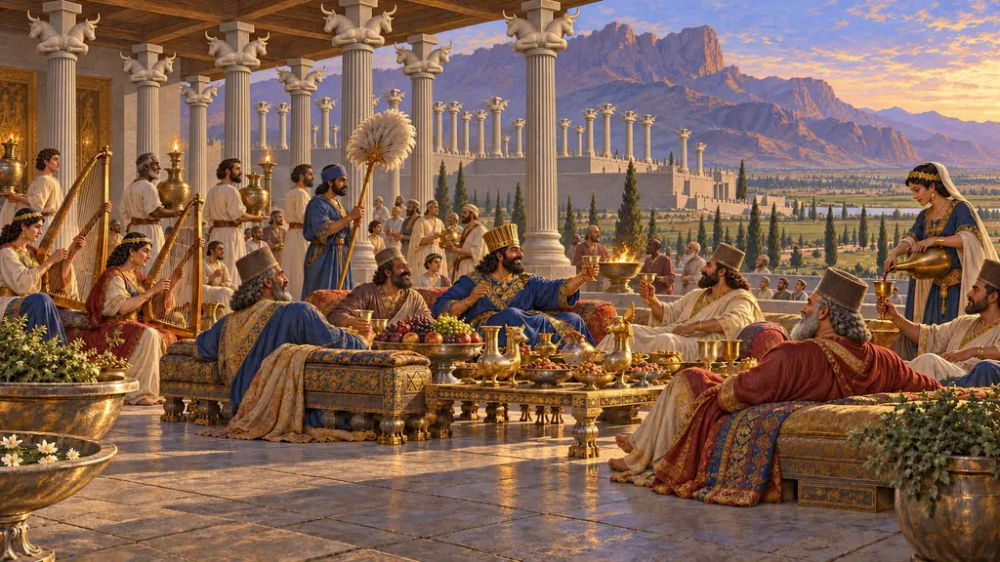
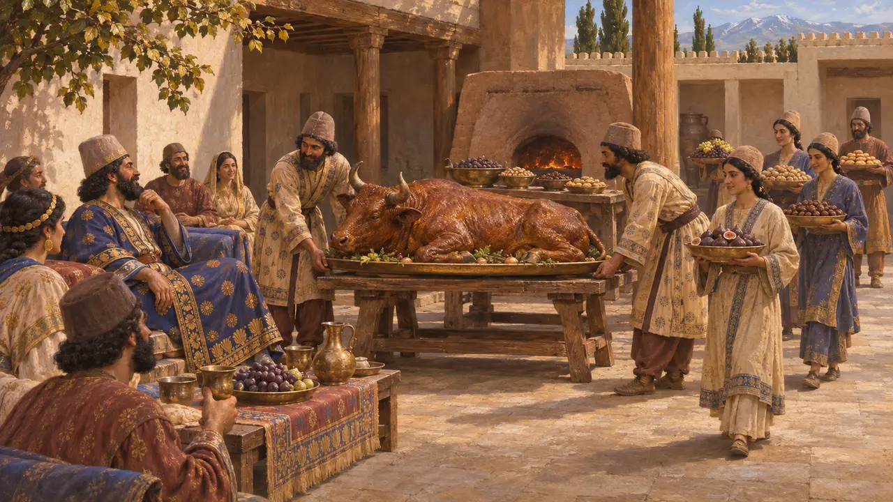
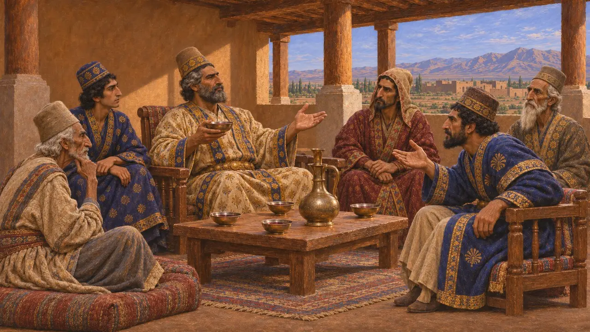
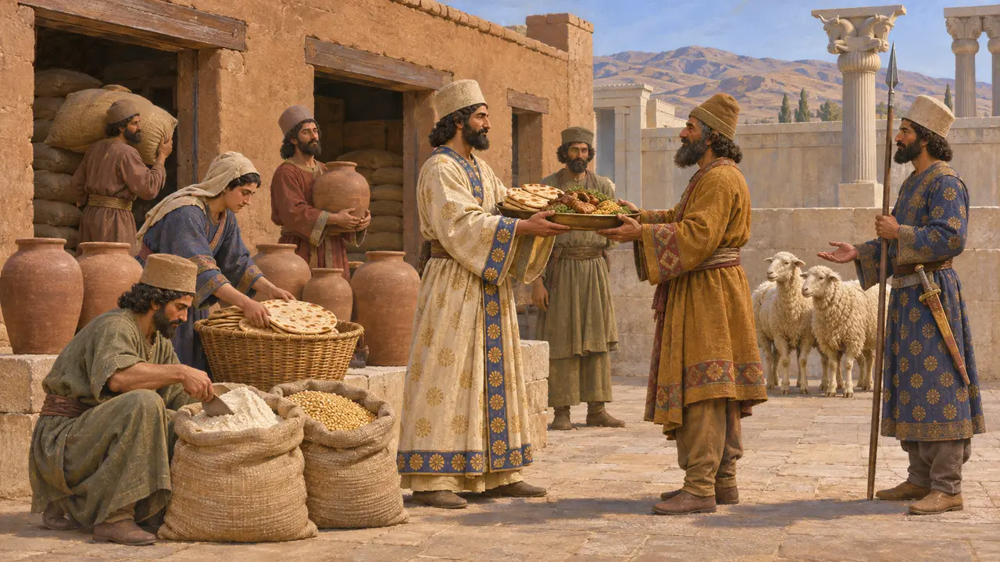
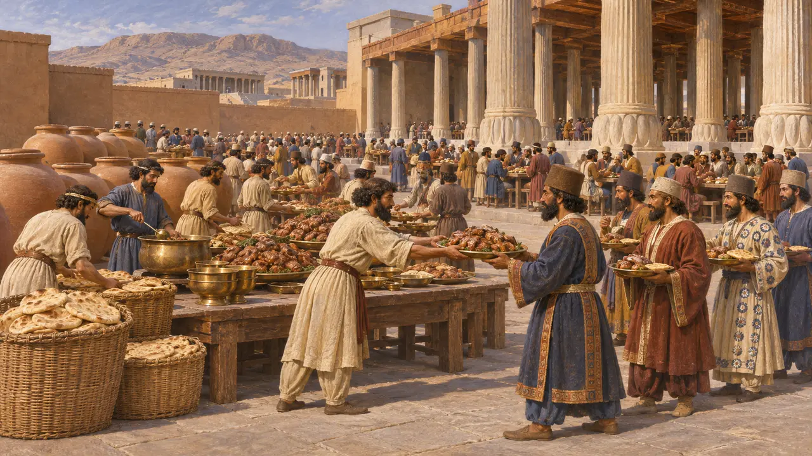
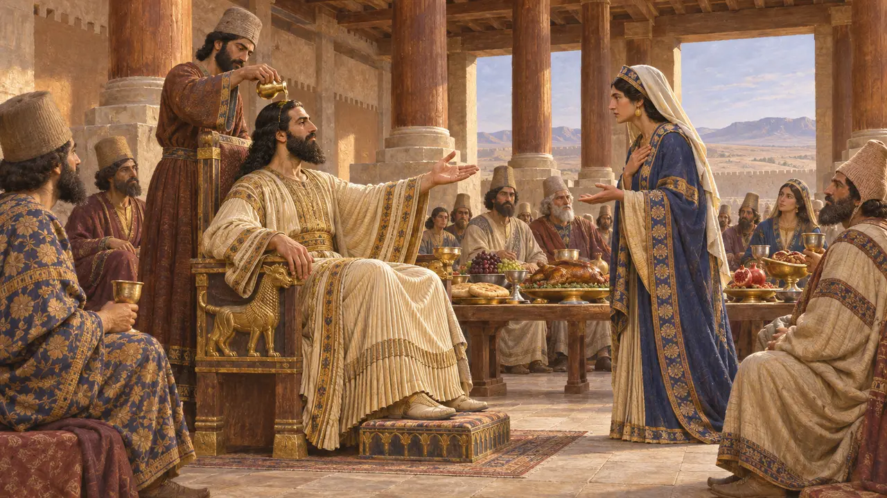

Salão de Banquetes
Banquetes das casas persas e da corte real, séculos VI e V AEC
Os banquetes eram uma das principais formas pelas quais as casas persas e a corte real exibiam posição e recompensavam a lealdade. Heródoto descreve banquetes de aniversário com animais assados inteiros e muita bebida. As tabuletas de Persépolis mostram a mesa do rei consumindo grandes estoques de grãos, vinho, cerveja e gado, que os historiadores acreditam ter sido repartidos entre seus favoritos.
No jogo: O Salão de Banquetes é um edifício de serviço cujos anfitriões convidam as casas por onde passam, e sua nota sobre aniversários segue Heródoto 1.133. Não se conhece nenhum tipo de edifício assim: os persas banqueteavam em salões de palácio, pátios, tendas e casas.

Aniversários e assados inteiros
Relato antigoHeródoto conta que os persas honravam o próprio aniversário acima de qualquer outro dia. Uma casa rica assava inteiros no forno um boi, um cavalo, um camelo ou um burro, enquanto as famílias mais pobres serviam animais menores, como ovelhas. Os pratos principais eram poucos, mas muitas iguarias adicionais vinham uma após a outra. Os persas, acrescenta ele, diziam que os gregos saíam da mesa ainda com fome, porque nada que valesse a pena comer vinha depois da refeição principal.
Herodotus 1.133

Vinho e conselho
Relato antigoHeródoto também relata que os persas eram muito apreciadores do vinho e que debatiam seus assuntos mais graves enquanto bebiam. No dia seguinte, o dono da casa onde haviam se reunido submetia-lhes de novo a decisão, já sóbrios, e eles só a mantinham se ainda lhes agradasse. Uma escolha feita primeiro em sobriedade era posta à prova novamente diante do vinho. Alguns historiadores suspeitam aqui de um estereótipo grego, mas Heródoto o apresenta como costume estabelecido.
Herodotus 1.133

Provisões para a mesa do Rei
Nos registrosAs tabuletas da Fortificação de Persépolis registram grãos, farinha, vinho, cerveja e animais fornecidos ao rei e à casa real, inclusive quando a corte viajava. Outras tabuletas registram alimentos destinados a oferendas aos deuses, que, segundo Wouter Henkelman, eram depois consumidos pelos participantes. Ele também sustenta que a mesa real funcionava como um sistema de redistribuição, com alimentos repassados da corte a nobres e guardas como sinal do favor do rei.
Persepolis Fortification tablets; W. Henkelman, Consumed before the King, 2010

O tamanho do jantar do Rei
DisputadoAteneu, escrevendo por volta de 200 EC, cita Ctésias e Dínon para afirmar que o rei jantava com 15.000 pessoas a um custo de 400 talentos. Heráclides de Cime, também citado por ele, diz que cerca de mil animais eram abatidos diariamente e que boa parte da comida ia para guardas e tropas. Polieno fala de uma coluna de bronze em Persépolis que listava as provisões do jantar. Alguns tratam esses números como exagero grego, enquanto Briant os lê como a contagem de todos os alimentados pelos depósitos reais.
Athenaeus, Deipnosophists 4.145-146; Polyaenus, Stratagems 4.3.32; P. Briant, From Cyrus to Alexander, 2002

Banquete de aniversário de Xerxes
Lenda posteriorHeródoto conta que, uma vez por ano, no aniversário do rei, os persas realizavam um banquete real chamado tykta, que ele traduz como "perfeito". Nesse dia, o rei ungia a cabeça e atendia aos pedidos de seus convidados. Em sua narrativa, a rainha Améstris valeu-se do costume para exigir a esposa de Masistes, e seguiram-se crueldades. O relato é moldado como um drama moral de paixões da corte. O costume dos presentes de aniversário pode ser real, mas a história não pode ser verificada.
Herodotus 9.110-112
Fontes
- Herodotus 1.133
- Herodotus 9.110-112
- W. Henkelman, Consumed before the King, 2010
- P. Briant, From Cyrus to Alexander, 2002
- Athenaeus, Deipnosophists 4.145-146
- Polyaenus, Stratagems 4.3.32